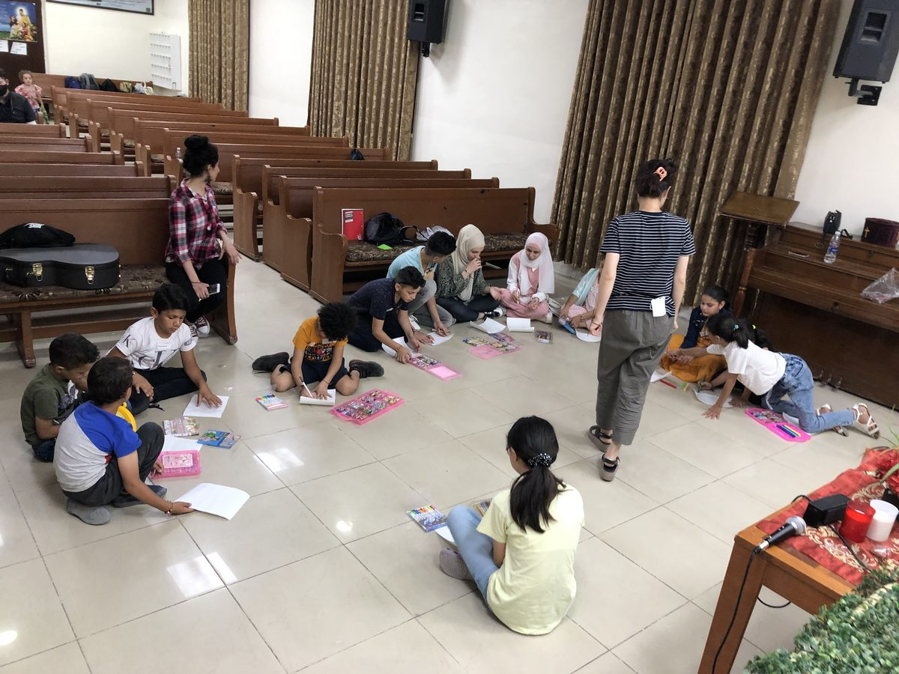
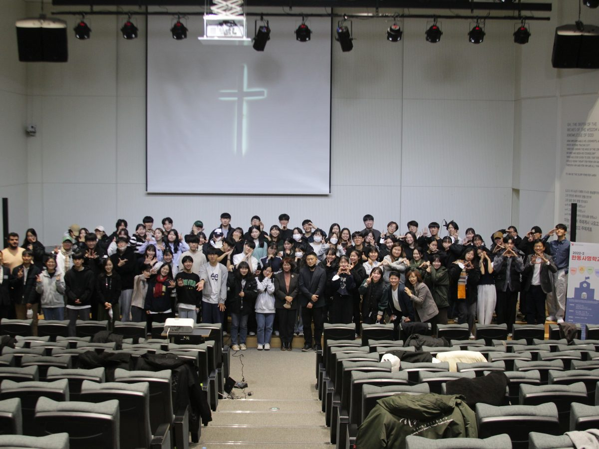
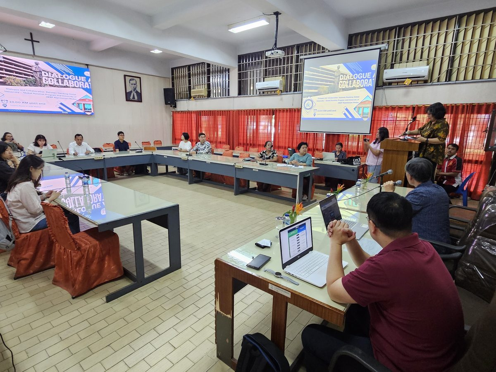

전공을 통한 선교
과학, 정치, 경제, 문화예술, 종교, 가정, 미디어, 교육. 나라를 이루는 8대 영역에서 각자의 전공으로 하나님 나라를 세웁니다.
- 전공을 활용한 선교 지원
- 선교지·선교사별 필요에 따른 맞춤형 전문 협력
- 글로벌 지역 전망 포럼 (선교 지역별 문제 해결)
- 선교지별 맞춤형 온라인 교육 제공
GMI
함께하는 공간,
함께 자라는 사람들
About GMI
“약할 때 강함 되시는 주님을 바라보며
날마다 오병이어를 드리는 심정으로”
한동 글로벌 사명원 Handong Global Mission Institute을 소개할 수 있게 됨에 너무 기쁘고 감사합니다. 하나님께서 한동에 이렇게 귀하고 아름다운 기관을 허락하심에 많이 설레고 감사합니다.
한동 글로벌 사명원은 제16회 세계한인선교사대회를 섬기기 위해 출발했지만 하나님은 거기에서 멈추지 않으시고 더 큰 비전을 보게 하셨습니다. 지쳐가는 우리나라 선교사님들을 도울 뿐만 아니라 마지막 때에 하나님 앞으로 더 많은 영혼들이 돌아올 수 있도록 평신도 전문인 사역이라는 이 시대에 주신 새로운 선교사 모델을 통해 전임 사역자뿐 아니라 이른바 ‘평신도 사역자’도 선교에 더욱 적극적으로 참여할 수 있도록 하고, 전임 선교사님들이 필요로 하는 전문적인 지식과 필요를 지원해 드리고 각 선교지 별 전문 지역 연구를 통하여 장기적으로 더욱 효과적이고 전략적인 선교를 감당할 수 있도록 하는 것입니다.
이를 위하여 글로벌 사명원은 이미 지역별, 기능별로 한동의 교수님들로 이루어진 70여 개 이상의 센터와 이를 돕는 전임 행정조직을 통해 어떻게 하면 주님의 지상명령을 더 잘 감당할 수 있을지 날마다 고군분투하며 나아가고 있습니다. 지금은 어쩌면 미약해 보일 수 있지만 약할 때 강함 되시는 주님을 바라보며 날마다 오병이어를 드리는 심정으로 진행하고 있습니다.
기도하는 것은 하나님께서 교회와 선교가 모두 힘들어 하는 이때, 세상의 거짓 진리들이 하나님의 참 진리를 왜곡하는 이때, 소망도 사라져 가는 것처럼 보이는 이때 하나님께서 그분의 팔을 직접 드셔서 거룩한 하나님의 나라가 다시 이 땅 위에 세워지는 것을 보는 것입니다. 한동 글로벌 사명원은 그러한 하나님의 사역에 조금이나마 보탬이 되는 기관이 되길 기도합니다.
한동글로벌사명원 원장 마민호
선교 네트워크 활성화와 선교사님들께 필요한 전문 협력을 지원하고, 선교지별 지역 연구를 통해 장기적으로 효과적이고 전략적인 선교를 돕습니다.
한동 글로벌 사명원은 전공을 통한 선교, 학생 영성 강화, 글로벌 네트워킹을 중심으로 활동합니다.

과학, 정치, 경제, 문화예술, 종교, 가정, 미디어, 교육. 나라를 이루는 8대 영역에서 각자의 전공으로 하나님 나라를 세웁니다.

한동인이 그리스도인의 정체성과 사명을 발견하고, 훈련을 거쳐 현장으로 나아가도록 돕습니다.

선교 현장의 선교사님, 현지 교회와 꾸준히 연결되어 함께 일할 거점을 넓혀 갑니다.